Sterilizing with steam under pressure is the fastest and surest method. It kills harmful germs in 15 minutes. You need a strong pot with a tight fitting lid. But be sure to make a small hole in the Iid so steam can escape when the pressure becomes too great.
A special pot called a pressure cooker is perfect for this. It even has a safety hole on it to release extra steam.
1. Put 2 cups of water and
2 spoonfuls of cooking oil into the pot.
2. Place the handles together.
Put on high heat until a loud hissing noise begins.
3. Put on lower heat. Begin timing now. Leave the hissing
DO NOT LET
pot on the low flame for
THE COOKER
15 minutes.
BOIL DRY!
4. Cool the pot under water, open, and lay the instruments on a clean towel to dry.
The next time you use the pot, you can use the same water that was Ieft inside it.


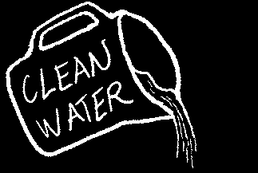


Sterilizing with heat is not necessary for instruments that do not touch blood. For example, after you examine a person or place a temporary filling, you can clean your instruments and then soak them in a solution of alcohol or bleach.
Alcohol solution tight fitting lid
1. Mix in a large container each week:
7 parts alcohol (95%) with 3 parts clean water. Keep the container water tightly covered to prevent evaporation.
2. Keep a covered pan half filled with alcohol this mixture. You will have to add some more of the mixture from the large container to the pan each day.
3. Leave your clean instruments in the pan, completely covered with the liquid, for 30 minutes.
Bleach solution (sodium hypocholorite)
Find the cheapest brand name in your area for bleach.
Examples are Javex, Clorox, Purex, and Cidex. Make
1 liter of solution with a mixture of ½ cup
(125 ml) of bleach and 3½ cups (875 ml)
of clean water.
BLEACH & WATER
½ CUP
3 + ½ CUPS
Unfortunately, bleach rusts metal instruments. To reduce rust, add 1 large spoonful of baking soda (sodium bicarbonate) to the solution, and leave your instruments in the solution for only
30 minutes.
Wipe each instrument with alcohol to remove the film of bleach. Then store it dry inside a clean cloth or in another covered pan.
Change the solution each week.
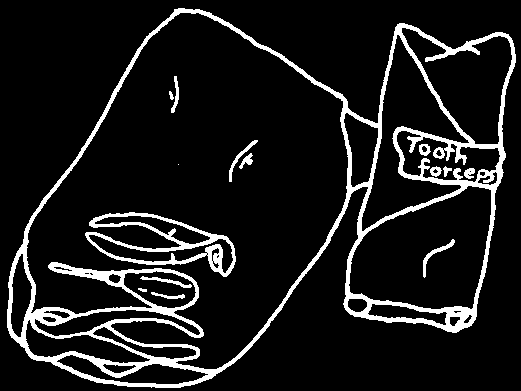

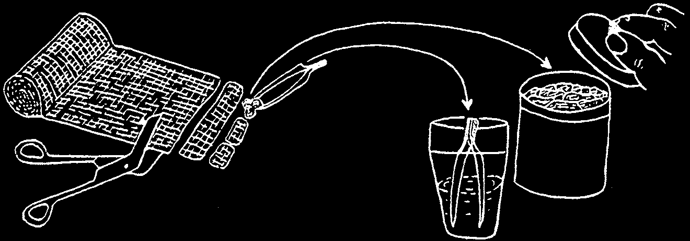
Keep your sterile instruments together in a clean place.
Wrap them in a clean cloth
OR
Leave them in disinfectant
(p. 89)
Before you use any instrument
Mark with tape the names again, wash it with clean water—to of the instruments inside.
remove the taste of the disinfectant.
Germs living in dirty cotton can easily go inside the socket and start an infection. It is important, therefore, to keep the cut pieces in a container that is clean and has a cover. Use clean tweezers to remove the cotton gauze when you need some.
Also, keep your room and work area clean. Sweep or mop the floor one or two times a day, and wipe down the chair and tables after every patient.
Staying clean is a part of staying healthy.
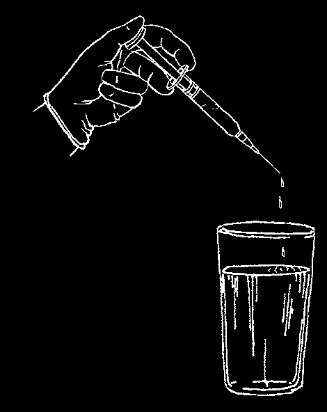
NEEDLES
Many people get sick with serious illnesses like hepatitis or HIV from using unsterilized needles.
Reusable syringes and disposable syringes
Reusable syringes can be used again and again. Reusable syringes make less waste and can save money, but they must be washed very carefully and sterilized after every use.
Use each disposable needle only one time and then throw it away in a box like the one on pages 199–200. If you must reuse a needle, replace the cap very carefully and put the needle in a safe place (such as a pan full of bleach solution) until you are ready to clean and sterilize it (p. 138).
HOW TO WASH AND STERILIzE A SYRINGE AND
NEEDLE fOR REUSE:
1. Put on a pair of heavy gloves to protect your hands from germs and from sticking yourself with the needle.
2. Draw 5% bleach solution (see page 89) up through the needle into the syringe barrel.
3. Squirt out the bleach solution.
4. Repeat several times. Rinse everything several times with clean water.
5. Take the syringe and needle apart and boil or steam them. (See page 138.)
Never reuse a needle or syringe without cleaning and sterilizing it first.
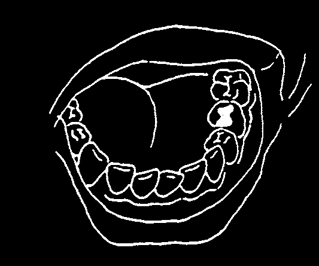
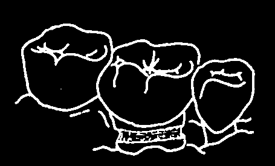
PART 1
PROBLEMS yOU WILL SEE MOST OFTEN
CAVITIES AND LOST OR BROKEN FILLINGS
A cavity can occur in any tooth. A cavity can also start around an old filling, especially if it is dirty. The deeper a cavity gets inside the tooth where the nerve lives, the more the tooth hurts.
SIGNS:
• Pain when drinking water or eating something sweet.
• A hole (or black spot) on the tooth, or between two teeth.
• Pain if food gets caught inside the hole.
• No pain when you tap the tooth.
TREATMENT (when there is no abscess):
Try to remove any loose piece of filling with a probe. Then, following the steps in Chapter 10, put in a temporary filling.
Now:
1. Fill the hole with cement. If you have no cement, put some cotton into the hole to keep food out.
2. Look for cavities or broken fillings in the other teeth. Fill each one with cement before it gets worse and starts to hurt.
Soon (within a few months):
3. Arrange for someone to replace the temporary filling with a permanent one. You will need a person who has experience using a dental drill
(see page 151), or doing Atraumatic Restorative Treatment (ART), a way to remove cavities without drilling..
A groove on the neck of a tooth is a more difficult cavity to fill. For the temporary cement to hold properly, you need to shape the groove with a drill. To help temporarily, you can put a little fluoride toothpaste on the groove (page 205). Do this once each week until the inside part of the groove is stronger and the tooth hurts less. Or, you can paint the inside of the groove with oil of cloves
(eugenol) to reduce the pain.
To avoid making the problem worse, (1) do not use a hard toothbrush;
(2) do not brush back and forth along the gums; and (3) do not chew tobacco or betel nut and do not hold them against the teeth.

TOOTH ABSCESS
A cavity that is not filled grows bigger and deeper until it touches the nerve.
Germs travel inside the tooth’s root and start an infection called an abscess.
Pus forms at the end of the root, inside the bone. As the pus increases, it causes great pressure. This is why an abscess causes severe pain.
SIGNS:
• Pain all the time, even when trying to sleep.
• Tooth often feels longer, and even a bit loose.
• Tooth hurts when it is tapped.
• A sore on the gums near where the root ends (gum bubble).
• Swelling of the gums around the tooth, or swelling of the face on the same side as the bad tooth.
TREATMENT:
If there is no swelling, take out the tooth immediately (unless you are able to give root canal treatment). This allows the pus to escape and relieves the pain. See Chapter 11.
If there is swelling, treat the swelling first. Take out the tooth only after the swelling goes down. This is necessary because an anesthetic (see Chapter
9) will not work if there is swelling.
To treat the swelling, give an antibiotic. Penicillin by mouth is best. Use an injection only when the person is in immediate danger. For example, inject penicillin when the person has a fever or if the swelling is pressing against the throat. But remember you can treat most serious infections with simple penicillin by mouth. For the doses for serious infections, look below the box on the next page. If you still think an injection is necessary, look at the section on 'aqueous procaine penicillin’ on page 204.
Adults and children over 25 kg (60 pounds) of weight should take the same amount of oral penicillin. Children under 25 kg should take ½ as much. For most infections, penicillin by mouth is taken 4 times a day for 5 to 7 days.
The first dose is double and then the regular dose is taken every 6 hours. The person should take all of the penicillin, even if the pain or swelling goes down. For the correct doses, see the next page.
SECOND CHOICE
THE BEST CHOICE
(for those allergic to penicillin)
Penicillin: 1 tablet = 250 mg
Erythromycin: 1 tablet (or capsule) = 250 mg
Give enough tablets for 5 to 7 days
Give enough tablets for 5 days
First Dose (take all at once)
First Dose (take all at once)
Adults
4 tablets
Adults
4 tablets and children over 25 kg
(1000 mg)
and children over 25 kg
(1000 mg)
Children under 25 kg
2 tablets
Children under 25 kg
2 tablets
(500 mg)
(500 mg)
Then every 6 hours for 5 to 7 days
Then every 6 hours for 5 days
Adults
2 tablets
Adults
2 tablets and children over 25 kg
(500 mg)
and children over 25 kg
(500 mg)
Children under 25 kg
1 tablet
Children under 25 kg
1 tablet
(250 mg)
(250 mg)
IMPORTANT: to allow it to best fight infection,
IMPORTANT: to avoid upset stomach, take take penicillin before eating.
erythromycin with meals.
Note: If you do not have penicillin, use amoxicillin, 3 times a day for 7 days.
Adults and children over 25 kg take 500 mg each dose, and children under
25 kg take 250 mg each dose. To use ampicillin, see Where There Is No
Doctor. People allergic to penicillin will also be allergic to amoxicillin and ampicillin.
For many infections, taking penicillin for 5 days should be enough. For serious infections, it may be necessary to take the antibiotics for 7 days.
For however long you take them, always take the double dose the first time, and then the regular dose 4 times a day (every 6 hours). If the infection does not heal, you may need a different medicine. Usually you can take out the tooth 1 or 2 days before the end of the antibiotic treatment, but the person must continue to take all of the tablets, even after you have taken out the tooth. If not, the infection might come back even stronger than before.
If the swelling is 'pointing’, open it with a sharp sterile knife to release the pus. Cover the wound with a sterile dressing to keep it clean. If you are not able to do that, explain how to reduce the swelling with heat. As often as possible until the swelling goes away:
• soak a cloth in warm water and hold it against the face.
• hold warm water inside the mouth near the swelling. It is not necessary to add salt to the water.
Finally, give the person medicine for pain. A 2-day supply will be enough, because the penicillin and the heat will reduce the pressure and that will reduce the pain. The best medicines for pain are aspirin, which comes in
300 mg tablets, and acetaminophen (paracetamol), which comes in
500 mg tablets. Aspirin is usually cheaper, but acetaminophen does not cause stomach pain and it is safer than aspirin for children. (To avoid stomach pain, take aspirin with food, milk, or water.) See doses at the top of the next page.


EVERY 6 HOURS (4 times a day):
aspirin or acetominophen adults
600 mg
1000 mg children
8 to 12 years
300 mg
500 mg
3 to 7 years
150 mg
250 mg
1 to 2 years do not use
125 mg
INFECTED SINUS
A sinus is a hollow place inside the bone. There is a sinus under the eyes, on each side of the nose. Because the sinus is very close to the roots of the top teeth, these teeth may hurt if the sinus becomes infected.
SIGNS:
• Toothache in several top teeth. The teeth look healthy, but hurt when you tap them.
• A head cold, and plugged nose. She can only breathe through her mouth.
• Hurts when you press against the bone under her eyes.
• Tooth feels different when patient bends over forward.
TREATMENT:
Do not take out any teeth. They will feel better after you treat the sinus infection.
1. Give penicillin for 5 days (page 94).
2. Explain to the person that she should:
• drink lots of water.
• breathe steam from boiling water to clear her nose.
• hold a warm wet cloth against her face, as often as possible.
• not try to blow her nose, or else her ears will hurt. Wiping the nose is better.
3. See the person again after 3 days, and
• examine her teeth closely, tapping them to be sure they are strong and healthy.
• if she is not better, get help from a more experienced health worker.
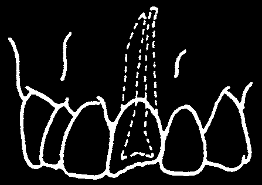
TOOTH INJURIES
1. Broken tooth
It is possible to save a broken tooth. It depends on where the tooth is broken and whether its nerve is still covered.
SIGNS:
• Pain when breathing air or drinking water.
• Blood from the gums around the tooth.
• Tooth moves when you touch it.
TREATMENT:
Take out the broken tooth if:
• its nerve is not covered. If no one can give special root canal treatment, the tooth must come out. Germs from the saliva have already gone inside the tooth and started a small infection.
• its root is broken. To see if it is broken, push gently against the tooth as you feel the bone around its roots. The tooth’s root probably is broken if the tooth moves but the bone does not. The root probably is not broken if both the tooth and bone move.
However, the bone around the roots may be broken (page 109).
You can save a broken tooth if the nerve is still covered and the root is not broken. To do this, use a file on the sharp edges around the break. This makes them smooth so they do not cut the tongue. Later, an experienced dental worker who has the equipment can cover the broken part with a cap or a filling. Until this is possible, tell the person how to protect the tooth:
• Give the tooth a rest. Use other teeth to eat.
• Do not drink things that are very hot or cold, and do not eat spicy food.
• Watch the tooth. See if it changes color (gets darker). Also watch the gums near the root. See if a sore (gum bubble) develops.
A dark tooth and gum bubble are signs that the tooth is dying. Take it out, unless you can give special nerve treatment.


2. Tooth knocked out
When a tooth is knocked out of the mouth, you should ask two questions:
(1) Was it a baby tooth? (2) How long ago did it happen?
Baby tooth. There is no reason to try to put a baby tooth back into the socket.
Tell the child to bite on some cotton to stop the bleeding. Then wait for the permanent tooth to replace it. Warn the mother that the permanent tooth may take more time than usual to grow into the mouth.
Similarly, there is no need for treatment if the baby tooth is pushed up under the gum.
The tooth may grow back into the right place later, or it may turn dark and die. if you see a darkened tooth or a gum bubble (page 74), take out the baby tooth before it hurts the permanent tooth that is growing under it.
Permanent tooth. A permanent tooth is worth saving. How long ago was it knocked out? If it was less than 12 hours ago, you can put a permanent tooth back into the socket. The sooner you do this the better, so do not wait. If you replace the tooth in the first hour, it has a much better chance of joining with the gum and bone. In order to heal and to join the bone, the tooth must be held firmly.
a) Wash the tooth gently with saline, milk, or clean water.
There should not be any bits of dirt on the root of the tooth.
Keep the tooth damp with wet cotton gauze.
Do not scrape away any skin from the root or from the inside of the socket.


b) If you can not use anesthetic, tell the patient that it will hurt somewhat. Gently push the tooth up into the socket. As you push it up, use a slight turning movement back and forth.
The biting edge of the loose tooth should be at the same level as the teeth beside it.
Hold it in place with your fingers for about 5 minutes.
c) Soften some beeswax and form it into 2 thin rolls. Place 1 roll near the gums on the front side of 5 teeth: the loose tooth and the 2 teeth on each side of it. Press the wax firmly, but carefully, against these teeth.
Do the same with the second roll of wax on the back side of the same teeth, again near the gums.
It is good if the wax on the back side is touching the wax on the front side. This helps the wax hold the teeth more firmly. To do this, you can
Keep the wax in its position push the wax between the for at least 3 weeks.
teeth with the end of your cotton tweezers.
Tell the person with the injured tooth to return to see you several times. The tooth may die several months or even several years later (see page 47). If that happens, you must take out the tooth, unless you can do root canal treatment.
If it is possible, take an X-ray of the tooth 6 months later and then again each year. Look at the X-ray picture of the root to be sure an infection is not eating it away. To do this, compare the root with the roots of the teeth beside it.


LOOSE TOOTH
A tooth may be loose for one of several reasons. Decide the reason before giving the treatment.
IF THE TOOTH IS LOOSE
BECAUSE
THE BEST TREATMENT
a new permanent tooth is
1. tell the mother and child what is happening.
growing under it.
2. pull out the loose baby tooth, if it is hurting the child.
gum disease or an old abscess has
1. take out the tooth, especially if it also hurts.
eaten the bone around its roots.
2. explain to the person what to do to prevent this problem in other teeth. (See Chapter 5.)
its root has been broken.
take out both parts of the tooth. If you have trouble taking out the broken root, leave it and try again a week later.
the bone around its root is cracked.
Do not take out the tooth. If you do, the bone will
(The bone moves when you push come out with it. Instead, hold the tooth with wires against the tooth.)
(page 110).
A tooth may also be loose because another tooth is biting too hard against it.
SIGNS:
• You can feel the tooth move when the upper and lower teeth meet.
• That tooth hurts.
TREATMENT:
You need to remove a bit of each of the teeth that are biting too hard. Use either a dental worker’s drill, a small file, or a hard stone.
1. Smooth the inside edge of the upper tooth.
2. Smooth the outside edge of the lower tooth.
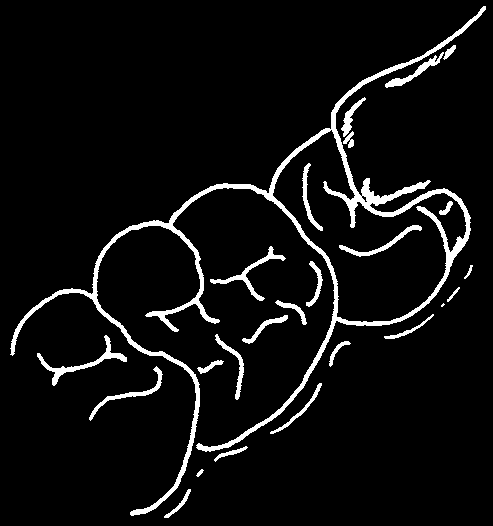
NEW TOOTH GROWING IN
A new tooth cuts through the gums when it grows into the mouth. Germs can easily go under the gums in that place and cause an infection. When the opposite tooth bites against the sore gum it can make an infection worse.
SIGNS:
• Toothache at the back of the jaw.
flap
• Mouth cannot open properly.
• A bad taste coming from the back of the mouth.
• Sore throat.
• Skin over the new tooth is sore and hurts when you touch it.
• The age of the person is the right age for growing a new molar
Infection in the gums and pressure from tooth (page 66).
the new tooth are painful. Notice the
'flap’ of skin over the new tooth.
TREATMENT:
Do not take out a new tooth while there is still infection and pain. Wait for the infection to finish. Then decide if there is room for the tooth to grow in. A dental X-ray can help you make that decision. New molar teeth are often difficult to take out. Ask an experienced dental worker to take out the tooth, if it must be done.
What you can do
First, treat the infection. Then wait for the new tooth to grow more into the mouth. Tell the person what is happening. Tell him what he can do to keep the gums healthy while the tooth grows in:
• Rinse the area with warm salt water (page 7). Make 4 cups each day until the mouth opens normally again. Then make 1 cup each day to prevent the problem from returning. Keep rinsing this way until the tooth grows all the way in.
• Hold a warm wet cloth against the jaw as often as possible each day.
• Take aspirin for pain (page 94).
Give penicillin (pages 93–94) if there is fever, a swelling, or if he is only able to open his mouth a little.
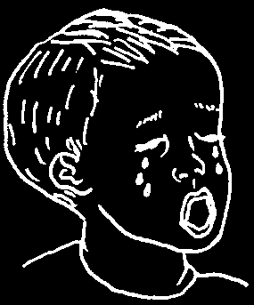

TEETHING
When babies and small children first get their teeth, it is called teething.
This can make the child unhappy, because his gums are sore.
Teething does not cause fever, head colds, or cough.
But a child can have any of these problems at the same time as he gets a new tooth.
TREATMENT:
If the child has another sickness, do not blame it on teething. Look for another cause and treat it separately. Also, do not cut the gum over the new tooth. Let the tooth grow through the gum by itself.
1. Give acetaminophen for pain and fever (page 94).
2. Give the child something hard to bite against. This will help the tooth to grow through the gums faster. For example, let him chew on a dry hard biscuit.
GUM DISEASE STARTING
Infection can start in the gums whenever the teeth near them are not clean.
For example, there may be swelling between only 2 teeth or between many teeth. In addition, gums that are weak from poor nutrition are not able to resist the infection. This is why pregnant women and people living with HIV must take special care to eat well and clean their teeth carefully. When a person has HIV, his body cannot fight infections well, so a gum infection can quickly get worse (page 183).
SIGNS:
• Gums are red instead of pink.
• Gums are loose instead of tight against the tooth.
• Between the teeth, gums are round instead of pointed.
Feel for tartar under the gum—or
• Gums bleed when the person brushes or flosses.
even a piece of fishbone.
• Gums bleed when you press against them, or when you scrape away food from under them.
• The person has bad breath and a bad taste inside the mouth.
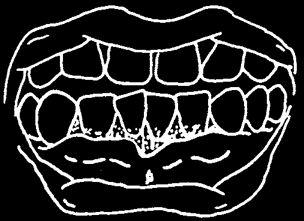
TREATMENT:
Explain to the person the cause of her gum problem and what she can do to help herself. The only way to stop gum disease is to remove plaque and tartar from the teeth and then to keep them clean.
1. Show her how to clean her teeth better near the gums (page 69).
2. Tell her to rinse her mouth with warm salt water (page 7). Make 4 cups each day until the bleeding stops. Then make 1 cup each day to keep the gums strong and tough.
3. Tell her to eat fresh fruits and vegetables. Guavas, oranges, pineapples, papayas, tomatoes, peas, and green leaves give strength to gums.
4. Gently reach under the gums and remove tartar (or loose piece of fishbone) that is caught there (see Chapter 8).
Sometimes a pregnant woman’s gums become swollen, and the swelling does not go down even after cleaning with a soft brush and rinsing with salt water. These swellings must be cut away. But she should wait to have this small operation until after the baby is born.
MORE SERIOUS GUM DISEASE
Vincent’s infection of the gums, also called trench mouth, affects both adults and children. In its worst form, it can eat a hole through the cheek of a weak child (page 121).
A person with Vincent’s Infection may not want to eat because his teeth hurt when he chews food. That can make a child’s malnutrition worse.
You must prevent this problem from starting, especially in a child who is weak from sickness. Teach mothers to clean their children’s teeth and to get their children to rinse their mouths with warm salt water.
SIGNS:
• Gums between the teeth are dying and turning gray.
• Pus and old blood collect around the teeth.
• Burning pain from the gums.
• Bleeding from the gums.
• The mouth smells bad.
TREATMENT:
You will need to see the person over a 2-week period. Start some treatment now:
1. If the person is already sick, give penicillin for 7 days (page 94).

2. Clean away the pus, old food, and big pieces of tartar. Then:
• Tell the person to rinse his mouth with warm water.
• Wipe his gums with cotton soaked in a 3% solution of hydrogen peroxide, iodine, disinfectant mouth wash, or warm salt water. Rinse with warm water. For a child, use a weaker solution, such as 1 part hydrogen peroxide mixed with 5 parts water.
• Scrape away the bigger pieces of tartar. Do not try to remove all of it.
You can do that later. Put topical anesthetic on the gums if you have some (first dry the area with cotton so the topical anesthetic will stay longer). Rinse away any loose bits of tartar with warm water.
3. Teach the person how to care for the gums at home:
• Rinse at home for 3 days with a weak solution of hydrogen peroxide,
(page 8), iodine, disinfectant mouth wash, or warm salt water. Try to hold the solution in the mouth for several minutes. The longer the solution touches the gums, the better it is for the gums. Rinse once every hour. After 3 days, change to salt water, 4 cups a day.
• Clean the teeth with a soft brush. Parents can clean children’s teeth.
Show them how (page 18), and ask them to do it even if the gums bleed.
For a young child who is not able to rinse, Mother or Father can wipe his gums with the weak solution 4 times a day.
Show parents how to do this. Give them some cotton gauze and hydrogen peroxide, iodine, or disinfectant mouth wash to take home.
4. Cook food that is soft (like pounded yam) and not spicy (no pepper). Eat fresh fruits and vegetables that give strength to the gums (page 102).
If you cannot eat well because of pain, take a multi-vitamin, or at least
Vitamin C and Zinc.
• Stop smoking and stop chewing betel nut.
One week Iater, scrape away the rest of the tartar from the teeth. Then use the person’s own brush and show him how to do a better job of cleaning his teeth.
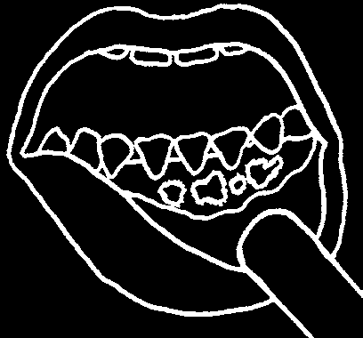
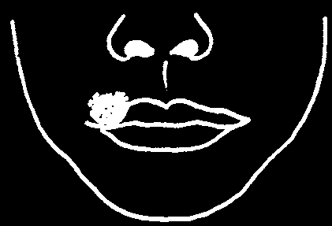
FEVER BLISTERS
Herpes virus is a kind of germ that causes fever blisters. Fever blisters are sores that can form inside the mouth on the gums or outside on the lips. Blisters on the inside cheeks only are not from herpes (see canker sores, page 106).
Sores inside the mouth are a serious problem that usually affect children between 1 and 5 years old. A child with fever blisters in his mouth can become very sick. He will not be able to eat properly. If he does not drink enough fluids, he can become dehydrated (lose his body water). This is dangerous! Fever blisters are also a problem for people living with HIV. See pages 186 to 187.
SIGNS:
Inside the mouth
• Sore throat.
• Fever.
• Crying, stops sucking 2-3 days before sores appear.
• Spit spills from the mouth because it hurts to swallow.
• Painful swelling under the jaw.
• Bright red blisters on the gums, but not between the teeth. Blisters also may be on the roof of the mouth.
TREATMENT:
Medicine cannot kill the herpes virus. The sores will go away by themselves in about 10 days. The treatment is to help the person feel more comfortable and to be sure he gets enough to eat and drink.
1. Give aspirin or acetaminophen for fever (page 94).
2. Wipe milk or yogurt over the sores to protect them before eating. Wash your hands before touching the inside of someone’s mouth! (See page 86.) Then give food that is soft and not spicy. If the person cannot eat, prepare a special milk-oil drink, as on page 111.
3. Give lots of fluids to drink.
Sores on the lips usually occur after the age of 5.
They often appear when the person is weak and sick (for example, with diarrhea or pneumonia.)
Usually there is no fever. The blisters soon break open and release water. When they dry, a crust forms. The blisters often return. When sores leak
On the lips water they can pass infection. If you or anyone else touches them, wash your hands immediately.
To prevent the blisters from becoming infected, put an antibacterial cream or petroleum jelly (Vaseline) on them. If you hold ice against the sores for several minutes each day, it may help them heal faster. See page 187 for more options.

THRUSH
Thrush is an infection caused by a yeast fungus called Candida. It often appears when a person is weak and poorly nourished, or sick and taking medicine like tetracycline or ampicillin. In a baby, thrush usually appears on the tongue or top of the mouth. It can stop the baby from sucking. ln an adult, thrush often occurs under a denture. Thrush is a very common problem for people living with HIV (see pages 180 to 181).
SIGNS:
• White patches on the tongue, cheek, or top of the mouth. Wipe the white area: If there is no bleeding it is old milk. If there is bleeding, it is thrush.
• The child may not want to suck or eat.
TREATMENT:
There is usually something else present which is helping thrush to grow.
Try to find what it is and deal with it. For example, treat the malnutrition, diabetes, or anemia, change or stop the antibiotic medicine, or clean the denture and leave it out of the mouth for a while. Then:
1. Cover the white patches with nystatin drops. Use a full dropper 4 or 5 times a day until the patches are gone. If you do not have nystatin you can soak a piece of cotton in gentian violet and use it to paint the white patches 2 times a day.
If the baby’s mother has sore, painful nipples, she may also have thrush in her breasts. She should treat her nipples the same way she treats the baby’s mouth.
Do not use penicillin or any other antibiotic unless you need to treat something different. Thrush can get worse when a person uses an antibiotic for a long time.
2. Continue breastfeeding. For older persons, make their food soft and easy to chew.
IMPORTANT: Sometimes white lines appear on the inside of an adult’s cheek or on the roof of the mouth. If these lines become sore and do not get better with treatment, they can change into a cancer (page 125). To prevent this cancer, ask the person to stop smoking (especially pipes), stop chewing betel nut, and get dentures adjusted if they do not fit properly.
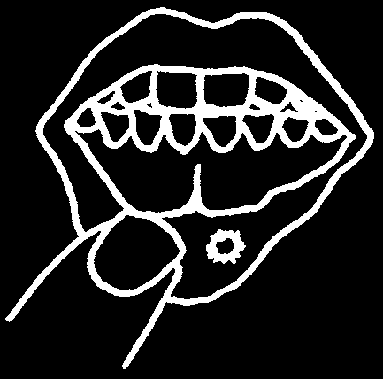
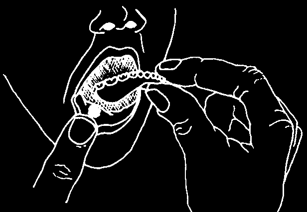
CANKER SORES
The exact cause of canker sores is not known. Canker sores affect both adults and children, and are very common among youth.
One or more sores can appear at any time. These sores hurt, especially when pieces of food touch them.
SIGNS:
• A sore can appear on the cheeks, inside the lips, on the tongue, or below the gums on the smooth skin.
• The sore is white or yellow with the skin around it bright red.
• The person may have had a similar kind of sore before. It tends to come back.
Note: a sharp edge of a denture rubbing against the gums can make a similar kind of sore.
TREATMENT:
A canker sore goes away by itself in about 10 days. Medicine does not make that happen any faster. (However, smoothing a denture or fixing a broken tooth does help.) The treatment is simple. Tell the person how to feel more comfortable while waiting for the 10 days to pass:
• Eat foods that are soft and not likely to hurt the sore.
• Do not eat spicy food.
• Drink lots of water.
• Chew food on the other side of the mouth, away from the sore.
A denture which does not fit should be remade.
In the meantime, leave the denture out of the mouth for
2 or 3 days.
Ask the person to rinse with warm sait water, 4 cups each day until the sore is better.
If the sore continues after 10 days, it may be infected. Give penicillin (page 93).
A sore that does not heal after antibiotic treatment may be cancer (see page 125). See a doctor immediately.
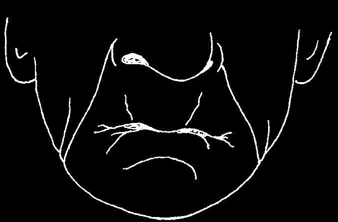
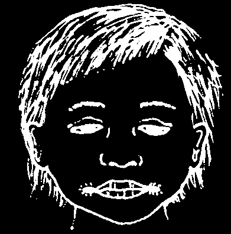
SORES AT THE CORNERS OF THE MOUTH
Teeth support the lips. When they come together for chewing, the teeth stop the person’s chin from moving any closer to the nose.
A person without many teeth looks old. A person with a poor fitting denture also looks old.
The distance from his chin to his nose is shorter than normal.
He must close his jaw further to eat. That causes lines to form at the corners of his mouth.
Poor health can make lines at the corners of the mouth crack and become sore. These cracks are often infected with thrush and can be treated with nystatin (see page 105).
If sores are not at the corners but around the mouth, they could be due to a bacterial infection (see page 94).
A person with missing teeth needs dentures. Dentures will help him chew more food and make him look younger. They support his Iips and open his mouth more. (See page 164).
A child who has had a fever or measles often has dry lips. The corners of her mouth can crack and become sore.
Cracks and sores appearing at the corners of a child’s mouth are signs of dehydration and malnutrition.
The child needs to eat the kind of foods that give strength, energy, and protection. Feed her beans, milk, eggs, fish, oils, fruits, and green leafy vegetables (see page 67).
TREATMENT (when sores occur):
1. Wash the sores with soap and hot water.
2. Mix 1 part sulfur with 10 parts of petroleum jelly (Vaseline).
3. Smear some on the sores 3–4 times a day.

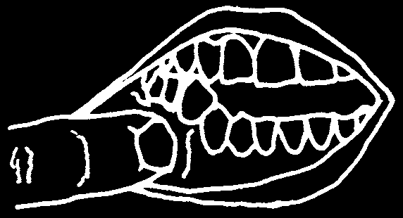
PART 2
SOME SPECIAL PROBLEMS
You will find some problems that are too serious for you to treat. If you can, send the sick person to a more experienced dental worker as soon as possible.
Sometimes, however, it is better to start some of the treatment yourself.
Early treatment can prevent some problems from becoming more serious.
Also, if you know what to do when someone returns from the hospital, you can help that person to get well faster.
Sometimes, you will find it impossible to get help. Therefore, we will discuss each of these more serious problems in detail, so you can give as much help as necessary.
BROKEN BONE
Three main bones form the face and lower jaw.
1. cheek bone
2. upper jaw bone
(lower jaw joins the head here)
3. lower jaw bone
A bone can break completely, or part of it can crack. In either case, the teeth are usually pushed out of position. Look for this as a sign of a broken bone.
SIGNS of a broken bone:
• The person has had an injury.
• When teeth are closed, some upper teeth do not meet lower teeth.
• The person cannot open or close the mouth properly.
• There is bleeding from between 2 teeth.
• There is swelling or a bruise on the face or jaw.
• There is bleeding into the eye.
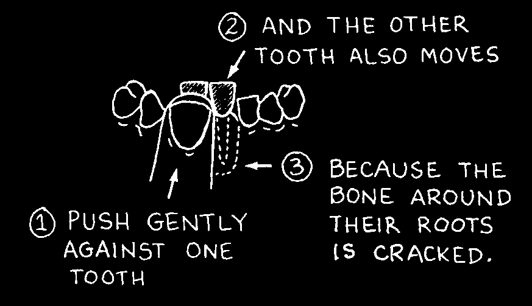